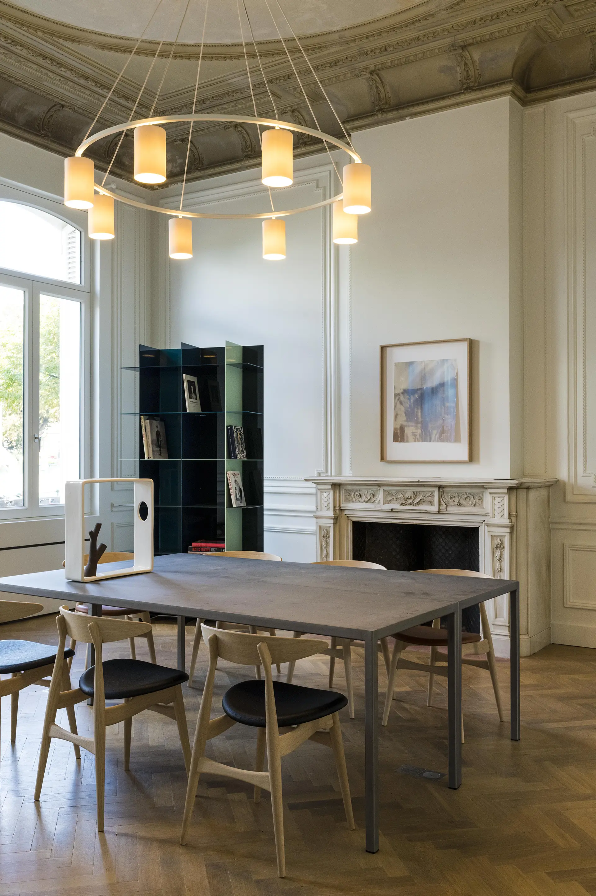
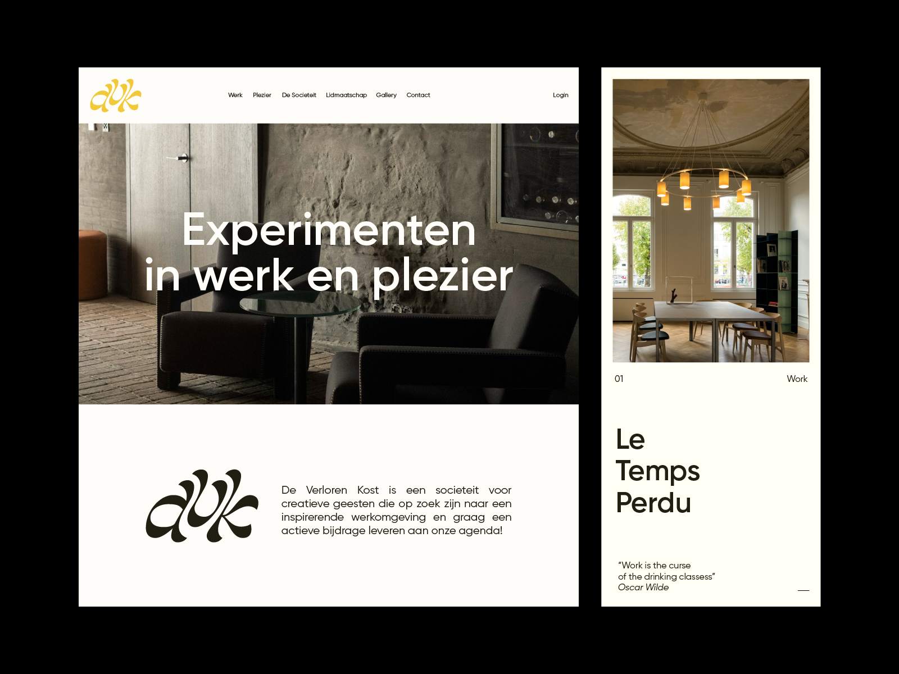
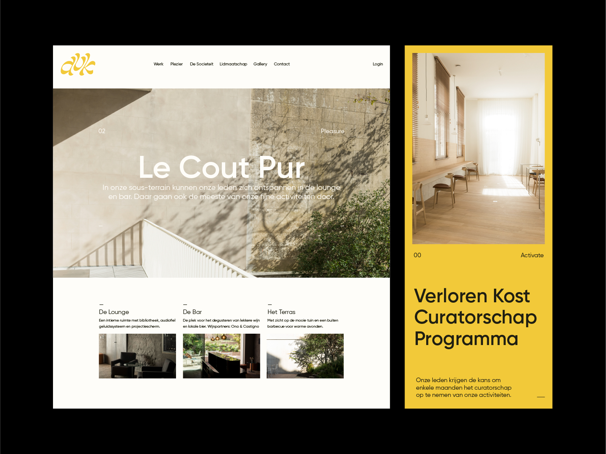
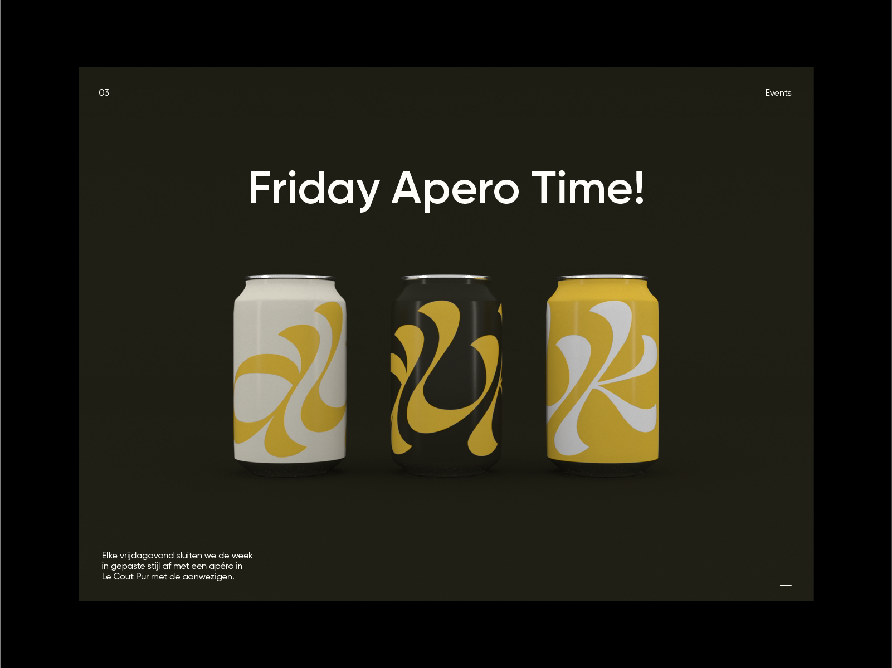
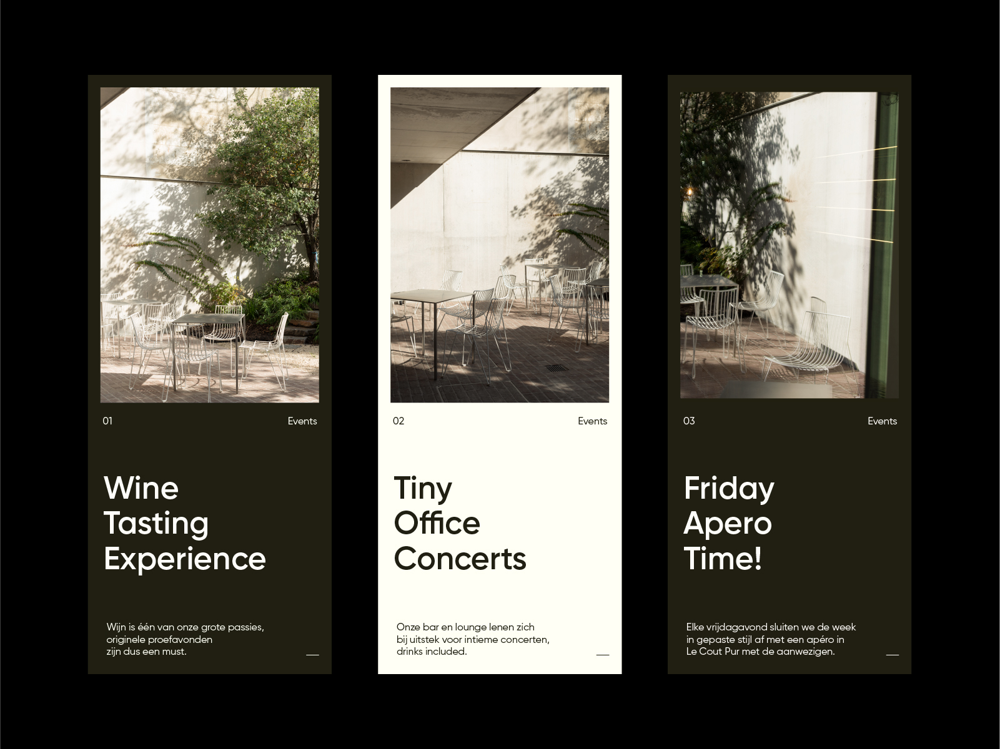

januari 2021
De Verloren Kost: een plek voor experimenten in werk en plezier
Wij verzorgden de art direction, het design en de website van De Verloren Kost

De Verloren Kost is een nieuwe sociëteit aan de Coupure in Gent. Deze sociëteit is een thuishaven voor creatievelingen die op zoek zijn naar een inspirerende werkomgeving en de kans om actief mee te bouwen aan onze agenda.
Leden van De Verloren Kost krijgen toegang tot een plek die werk en plezier combineert, en spelen tegelijk een actieve rol in het vormgeven van onze events.
Op de benedenverdieping zijn verschillende flexibele ruimtes beschikbaar om te werken en te vergaderen. De oprichters geloven dat je jezelf omringen met mooie dingen de werkervaring verrijkt. Daarom ontwierp interieurarchitect Caroline De Wolf (Casa Argentaurum) De Verloren Kost, waar permanent een wisselende collectie kunstobjecten te zien is.
In het souterrain kunnen leden ontspannen in de lounge en bar, die ook het decor vormt voor de meeste van onze fijne activiteiten.



